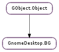

| static | get_surface_from_root(screen) |
| static | new() |
| static | set_surface_as_root(screen, surface) |
| static | set_surface_as_root_with_crossfade(screen, surface) |
| changes_with_time() | |
| create_frame_thumbnail(factory, screen, dest_width, dest_height, frame_num) | |
| create_surface(window, width, height, root) | |
| create_thumbnail(factory, screen, dest_width, dest_height) | |
| draw(dest, screen, is_root) | |
| get_color(type, primary, secondary) | |
| get_filename() | |
| get_image_size(factory, best_width, best_height, width, height) | |
| get_placement() | |
| has_multiple_sizes() | |
| is_dark(dest_width, dest_height) | |
| load_from_preferences(settings) | |
| save_to_preferences(settings) | |
| set_color(type, primary, secondary) | |
| set_filename(filename) | |
| set_placement(placement) |
None
| Name | Parameters | Return | Description |
|---|---|---|---|
| changed | |||
| transitioned |
Bases: GObject.Object
| Parameters: | screen (Gdk.Screen) – a Gdk.Screen |
|---|---|
| Returns: | a cairo.Surface if successful or None |
| Return type: | cairo.Surface |
This function queries the _XROOTPMAP_ID property from the root window associated with screen to determine the current root window background pixmap and returns a copy of it. If the _XROOTPMAP_ID is not set, then a black surface is returned.
| Return type: | GnomeDesktop.BG |
|---|
| Parameters: |
|
|---|
Set the root pixmap, and properties pointing to it. We do this atomically with a server grab to make sure that we won’t leak the pixmap if somebody else it setting it at the same time. (This assumes that they follow the same conventions we do). surface should come from a call to GnomeDesktop.BG.create_surface ().
| Parameters: |
|
|---|---|
| Returns: | a GnomeDesktop.BGCrossfade object |
| Return type: |
Set the root pixmap, and properties pointing to it. This function differs from GnomeDesktop.BG.set_surface_as_root () in that it adds a subtle crossfade animation from the current root pixmap to the new one.
| Parameters: |
|
|---|---|
| Returns: | the newly created thumbnail or or None if frame_num is out of bounds. |
| Return type: |
Creates a thumbnail for a certain frame, where ‘frame’ is somewhat vaguely defined as ‘suitable point to show while single-stepping through the slideshow’.
| Parameters: |
|
|---|---|
| Returns: | None on error (e.g. out of X connections) |
| Return type: |
Create a surface that can be set as background for window. If is_root is True, the surface created will be created by a temporary X server connection so that if someone calls XKillClient on it, it won’t affect the application who created it.
| Parameters: |
|
|---|---|
| Returns: | a GdkPixbuf.Pixbuf showing the background as a thumbnail |
| Return type: |
| Parameters: |
|
|---|
| Parameters: |
|
|---|
| Parameters: |
|
|---|---|
| Return type: |
| Return type: | GDesktopEnums.BackgroundStyle |
|---|
| Parameters: | |
|---|---|
| Return type: |
| Parameters: | settings (Gio.Settings) – |
|---|
| Parameters: | settings (Gio.Settings) – |
|---|
| Parameters: |
|
|---|
| Parameters: | placement (GDesktopEnums.BackgroundStyle) – |
|---|